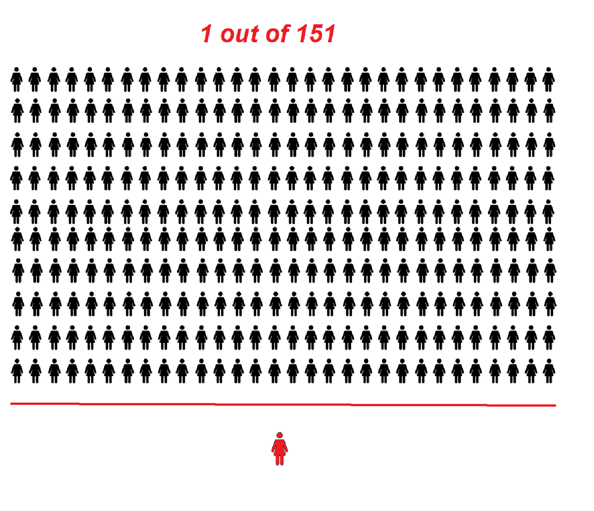

Statistics
In Singapore, Breast Cancer is one of the highest occurrence cancer. See for yourself the trend from data gathered over a 5 year-period from 2013 onwards below.

According to the Singapore Cancer Society, Breast Cancer ranks first in terms of the most prevailing cancer in Singapore compared to the other cancers
Yearly Affected Female Statistics
2013 Statistics
As of 2017, One in __ women were suffering from Breast Cancer out of a total female population of ___.
2017 Statistics
As of 2017, One in 151 women were suffering from Breast Cancer out of a total female population of ___.